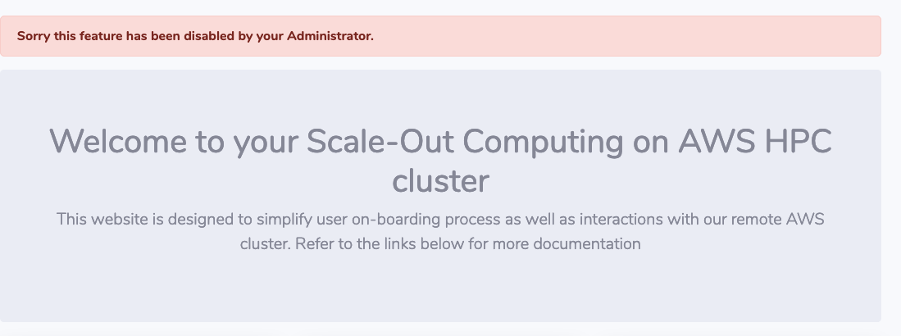

Disable API
If required, SOCA administrators can disable web API or views by using @disabled decorator
Disable an API¶
First, let's confirm a user can submit a job via the /api/scheduler/job endpoint:
curl -k -X POST \
> -H "X-SOCA-TOKEN: xxx" \
> -H "X-SOCA-USER: mickael" \
> -F payload="IyEvYmluL2Jhc2gKI1BCUyAtTiB0ZXN0am9iCiNQQlMgLVYgLWogb2UgLW8gdGVzdGpvYl9vdXRwdXQucWxvZwojUEJTIC1QIG15cHJvamVjdAojUEJTIC1xIG5vcm1hbAojUEJTIC1sIG5vZGVzPTEsaW5zdGFuY2VfdHlwZT1jNS5sYXJnZQovYmluL2VjaG8gIkhlbGxvIFdvcmxkIgo=" \
> https://xxx.us-west-2.elb.amazonaws.com/api/scheduler/job
{"success": true, "message": "0"}
Edit /apps/soca/$SOCA_CONFIGURATION/cluter_web_ui/api/v1/scheduler/pbspro/job.py and import the new decorator
from decorators import disabled
Locate the API you want to disable and replace the current decorator with @disabled
Before:
@private_api
def post(self):
// code
After:
@disabled
def post(self):
// code
Restart SOCA web interface via socawebui.sh stop/start and validate you cannot use the API anymore
curl -k -X POST \
> -H "X-SOCA-TOKEN: xxx" \
> -H "X-SOCA-USER: mickael" \
> -F payload="IyEvYmluL2Jhc2gKI1BCUyAtTiB0ZXN0am9iCiNQQlMgLVYgLWogb2UgLW8gdGVzdGpvYl9vdXRwdXQucWxvZwojUEJTIC1QIG15cHJvamVjdAojUEJTIC1xIG5vcm1hbAojUEJTIC1sIG5vZGVzPTEsaW5zdGFuY2VfdHlwZT1jNS5sYXJnZQovYmluL2VjaG8gIkhlbGxvIFdvcmxkIgo=" \
> https://xxx.us-west-2.elb.amazonaws.com/api/scheduler/job
{"success": false, "message": "This API has been disabled by your Administrator"}
If you want to re-enable the API, simply configure the decorator back to its previous version (@private_api).
Restart the web interface again and verify the API is now enabled:
curl -k -X POST \
> -H "X-SOCA-TOKEN: xxx" \
> -H "X-SOCA-USER: mickael" \
> -F payload="IyEvYmluL2Jhc2gKI1BCUyAtTiB0ZXN0am9iCiNQQlMgLVYgLWogb2UgLW8gdGVzdGpvYl9vdXRwdXQucWxvZwojUEJTIC1QIG15cHJvamVjdAojUEJTIC1xIG5vcm1hbAojUEJTIC1sIG5vZGVzPTEsaW5zdGFuY2VfdHlwZT1jNS5sYXJnZQovYmluL2VjaG8gIkhlbGxvIFdvcmxkIgo=" \
> https://xxx.us-west-2.elb.amazonaws.com/api/scheduler/job
{"success": true, "message": "1"}
Disable a view¶
Process is very similar, locate the HTTP view you want to restrict. For example edit /apps/soca/$SOCA_CONFIGURATION/cluster_web_ui/views/remote_desktop.py
Import the new decorator
from decorators import login_required, disabled
Then replace the current decorator of the view you want to restrict with @disabled
@remote_desktop.route('/remote_desktop', methods=['GET'])
@disabled
def index():
// code
Restart the Web UI. Accessing the view will now redirect you back to your homepage
